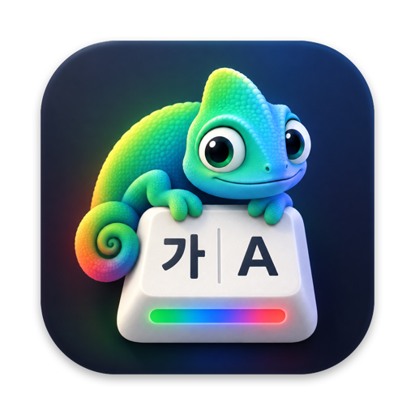

Know which language you're about to type in.
KeyHue paints the edge of your Mac's screen with the color of the current input source. One glance, before you type.
Download for macOS Latest version. For macOS 13 or later.Free and open source. Runs natively on Apple silicon and Intel.
All versions and release notes

Try it here
Type in any language. The bar at the bottom of this page changes color, the way KeyHue colors the edge of your screen. Turn on Caps Lock too.
- ABC, U.S. and other Latin layouts
- Korean
- Japanese
- Chinese
- Russian and other Cyrillic layouts
- Caps Lock, shown on top of everything else
The app reads the input source macOS has actually selected. This page can only guess from the letters you type.
Opening KeyHue for the first time
KeyHue is a free side project and isn't signed with a paid Apple Developer ID, so macOS asks you to confirm it once.
- Download and unzip
Move KeyHue.app to your Applications folder.
- Allow it to open
- macOS 15 Sequoia or later: open KeyHue once, then go to System Settings › Privacy & Security and click Open Anyway.
- macOS 13–14: Control-click KeyHue.app, choose Open, then Open again.
- Open Settings
Click KeyHue in the Dock, or the chameleon in the menu bar and choose Settings…, to pick colors and automatic switching. The manual walks through every option.
KeyHue never records what you type
It contacts GitHub only to check for updates; automatic checks run once a day and can be turned off in Settings. It sends no typing, app activity or logs and has no analytics. Optional features ask for a permission only when you turn them on.
| Feature | What KeyHue reads | Permission |
|---|---|---|
| Color bar, Caps Lock, app switching | The selected input source, Caps Lock state, the active app | None |
| Switch back on ESC | Whether the pressed key is ESC. No characters. | Input Monitoring |
| Switch back when leaving a text field | The kind of element in focus, never its contents | Accessibility |